Olus console review · 27 September 2026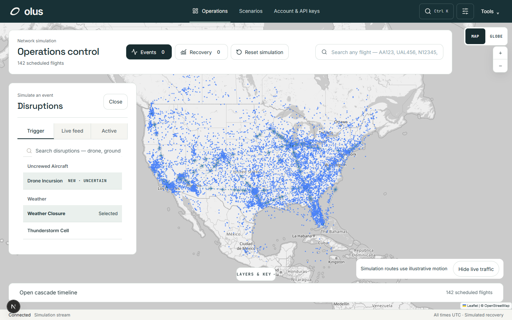
Live map and disruption controls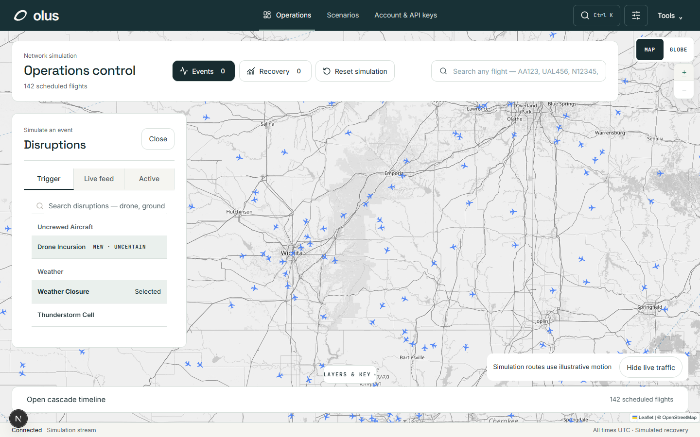
Live aircraft at detailed zoom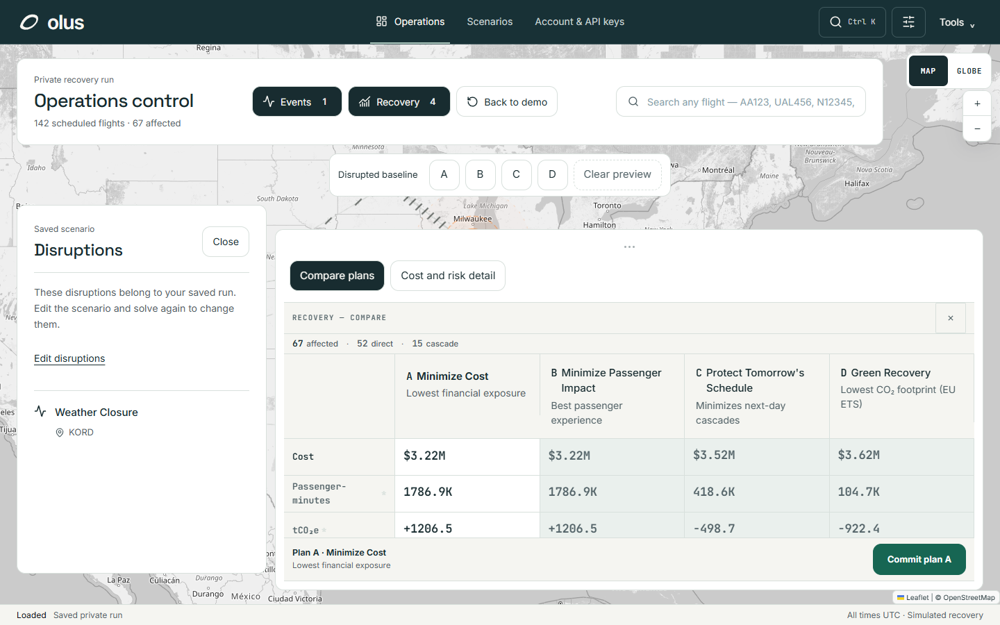
Recovery comparison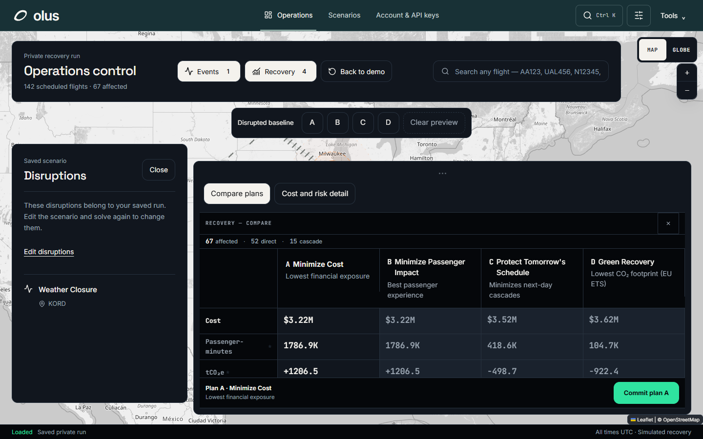
Saved dark theme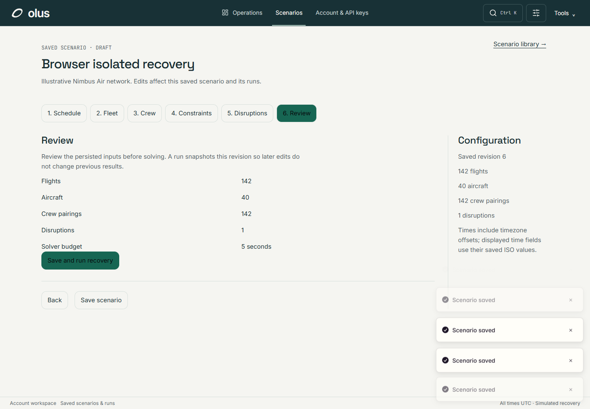
Scenario review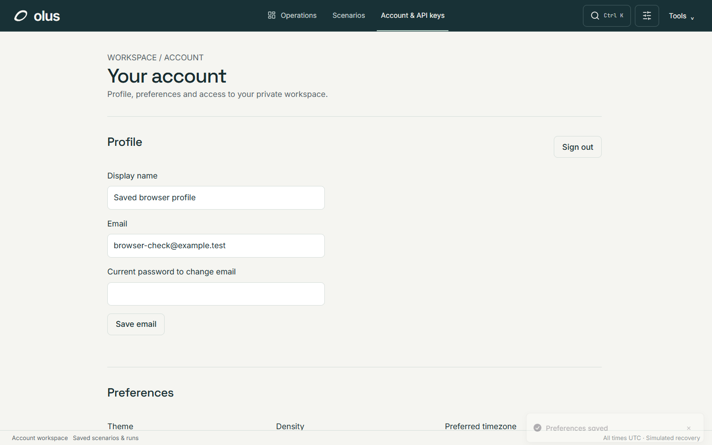
Account and API keys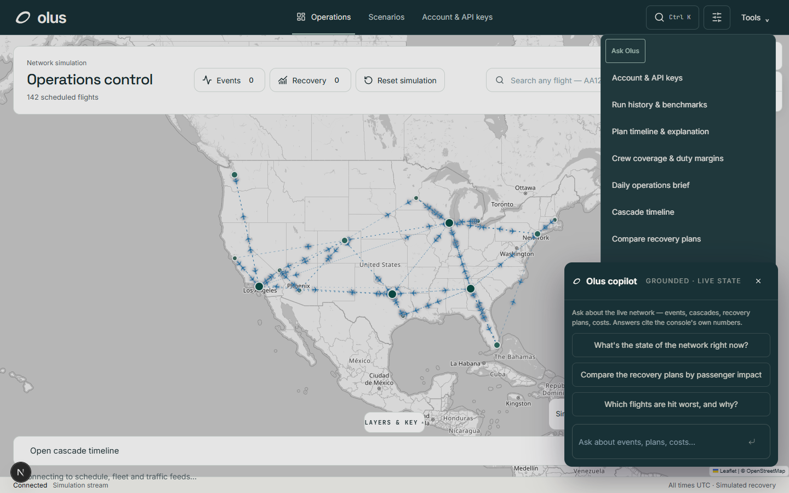
Copilot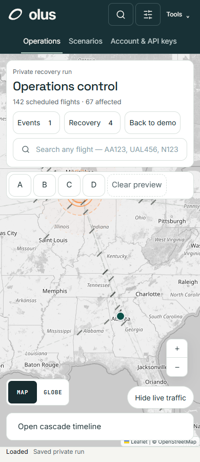
Phone map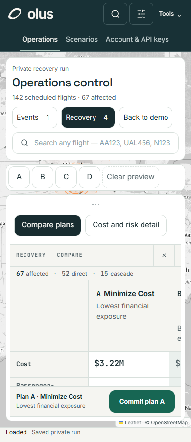
Phone recovery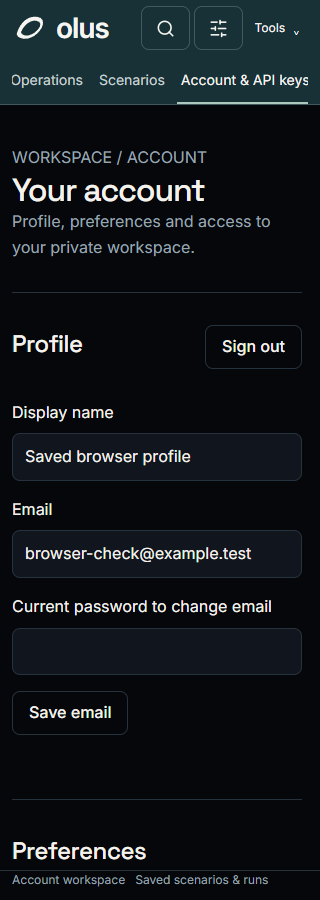
Narrow account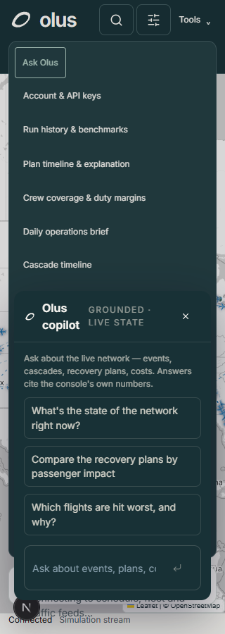
Narrow copilot